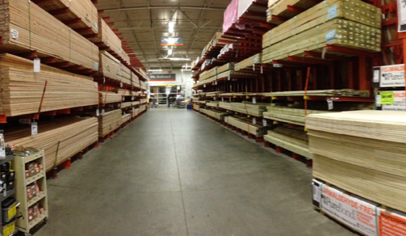

imapex 101
Welcome to class... now what?
Why are we here?


Are you in?
Programmability Evolution
|
Stage 1 CLI is all we need |
Stage 2 Fine, we have APIs... (it's just a fad) |
Stage 3 Huh... Python is pretty neat |
Stage 4 Look... We can create VLANs!!! |
Stage 5 Let's solve some new problems. |
We are here... |
||||
Value to End User
|
Python, REST, NXAPI, Mantl, Docker, Tropo, Spark, ACI-Toolbox |
|
|  | Tetration, CMX, NetFlow, Identiy, Configs, Health |
| ???? |
imapex Principals
- We are a grass roots program.
- We are here because we want be.
- We will actively participate.
- We expect constant change.
- When we have an idea, we make it happen.
imapex Goals
- Understand "developers" by becoming one
- Build practical and hands-on understanding of DevOps
- Create useful and functional cross architectural demos
- Develop tribal knowledge and a community of interest
imapex 101 Goals
Accelerate application development
- Jumpstart skills needed to develop modern demos
- Provide practical information and links for more
- Guided, hands-on exercises introduce
- Self directed exercises explore and reinforce
- Open discussion on best practices and standards
- Agile community maintained content